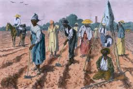
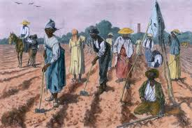

História da escravidão até chegar no Brasil
A escravidão esteve presente em diversas sociedades ao longo da história, sem uma data exata de seu surgimento. Observa-se a prática em civilizações como o Egito Antigo, por volta de 2700-2200 a.C., e no continente africano, a partir de cerca de 700 d.C., com o comércio transaariano. Este comércio consistia em uma rede de rotas comerciais através do Deserto do Saara, conectando a África Ocidental ao Norte da África e ao Mediterrâneo, e perdurou da Antiguidade até o século XIX.
 

No Brasil, a escravidão teve início por volta da década de 1530, quando os portugueses necessitaram de mão de obra para a exploração da terra. Inicialmente, tentaram escravizar os indígenas, mas essa prática não obteve sucesso. Os indígenas, que delegavam as atividades agrícolas para as mulheres de suas tribos, se revoltaram quando os portugueses exigiram que os homens indíginas trabalhassem nas plantações, o que era visto como um desrespeito às suas tradições. Diante disso, os portugueses optaram por escravizar africanos, que já possuíam conhecimentos avançados em técnicas agrícolas. A escravidão no Brasil foi uma das instituições mais cruéis e profundas da história do país, que perdurou por mais de três séculos, de 1500 até 1888, quando foi finalmente abolida com a assinatura da Lei Áurea. Este período teve um impacto profundo na sociedade, na economia e na cultura brasileiras, moldando o país de maneira indelével. O sistema escravagista no Brasil teve início logo após a chegada dos portugueses, que, ao se depararem com a dificuldade de estabelecer uma produção agrícola sem mão de obra suficiente, recorreram à escravização de indígenas. No entanto, essa tentativa foi malsucedida devido às constantes fugas e ao fato de que os indígenas não estavam adaptados às práticas agrícolas exigidas pelos colonizadores. Foi então que, a partir do século XVI, começou a importação de africanos escravizados para o Brasil, especialmente para o cultivo de açúcar nas grandes plantações nordestinas. O tráfico de africanos foi, ao longo de mais de 300 anos, a principal fonte de mão de obra para as lavouras de açúcar, café, e, mais tarde, para as minas de ouro e diamantes. Estima-se que mais de 4 milhões de africanos foram trazidos ao Brasil durante o período da escravidão, representando a maior parte da população escravizada no Novo Mundo. Esses africanos eram forçados a viver em condições desumanas, sendo submetidos ao trabalho pesado nas plantações, nas casas dos senhores e nas minas. Muitos eram separados de suas famílias, e a resistência a esse sistema brutal resultava em severas punições. A escravidão no Brasil não se limitou apenas ao trabalho agrícola. A cultura escravocrata também se enraizou nas cidades, onde os escravizados eram empregados em atividades como serviços domésticos, carpintaria, costura, entre outros. A mão de obra escrava foi fundamental para a construção das grandes cidades coloniais, como Rio de Janeiro e Salvador, e, posteriormente, para o crescimento das indústrias no século XIX. A resistência dos escravizados, embora muitas vezes silenciada pela história oficial, foi constante e variada. Houve fugas, como a formação de quilombos, comunidades de escravizados fugitivos que se refugiaram em regiões isoladas, e também revoltas como a famosa Revolta dos Malês, em 1835, em Salvador. Além disso, muitos escravizados encontraram formas de resistir em suas culturas, preservando suas línguas, religiões e tradições africanas. O movimento abolicionista no Brasil, que ganhou força ao longo do século XIX, foi impulsionado por uma série de fatores, como a pressão internacional, a luta de intelectuais, jornalistas e religiosos, e a própria resistência dos escravizados. A Lei do Ventre Livre (1871) e a Lei dos Sexagenários (1885), que concediam liberdade a filhos de escravizados e a pessoas com mais de 60 anos, foram passos importantes rumo à abolição total. Porém, foi a Lei Áurea, sancionada pela Princesa Isabel em 13 de maio de 1888, que decretou o fim oficial da escravidão no Brasil. Apesar da abolição, os ex-escravizados e seus descendentes continuaram a enfrentar discriminação e exclusão social. A sociedade brasileira não preparou políticas de inserção para os recém-libertos, e muitos continuaram a viver em condições precárias. A escravidão, portanto, deixou marcas profundas nas estruturas sociais e econômicas do Brasil, cujos efeitos ainda são sentidos até hoje. O legado da escravidão no Brasil é um tema central nas discussões sobre desigualdade racial e social. A herança histórica da escravidão, com seus resquícios de racismo estrutural e desigualdade, continua a influenciar a sociedade brasileira, que ainda busca formas de superar as cicatrizes deixadas por séculos de opressão.
Consciência Negra nos dias de hoje.
Hoje, no Brasil, celebramos o Dia da Consciência Negra, uma data de extrema importância para refletirmos sobre a luta contra o racismo e a promoção da igualdade. É um momento para lembrar que o respeito deve ser estendido a todas as pessoas, independentemente da cor, características físicas ou nacionalidade, reconhecendo a diversidade como um valor fundamental para uma sociedade justa e inclusiva.
As cicatrizes não cicatrizadas
O racismo tem um impacto presente até hoje...